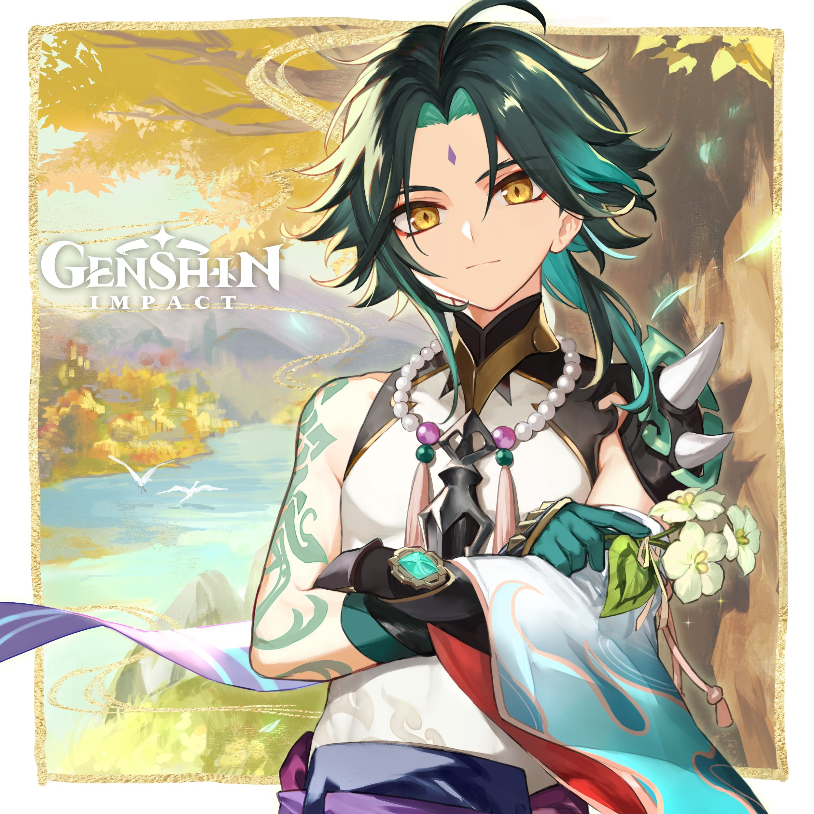

Meet Xiao
Despite his appearence he has lived for over two thousand years.
Xiao is an adeptus, under the name Alatus, and the sole surviving member of the five foremost Yakshas dispatched by Morax
to subdue the demonic spirits that plagued Liyue. He currently resides at Wangshu Inn and mostly restrains himself from
large crowds and social interactions.
About Xiao:
- Likes to eat snow
- Likes Almond Tofu
- Name was not originally Xiao, Xiao comes from the current god that saved him
- His birthday is April 17th
This is Xiao

Don't let this picture fool you he tends to be cold and distant to strangers